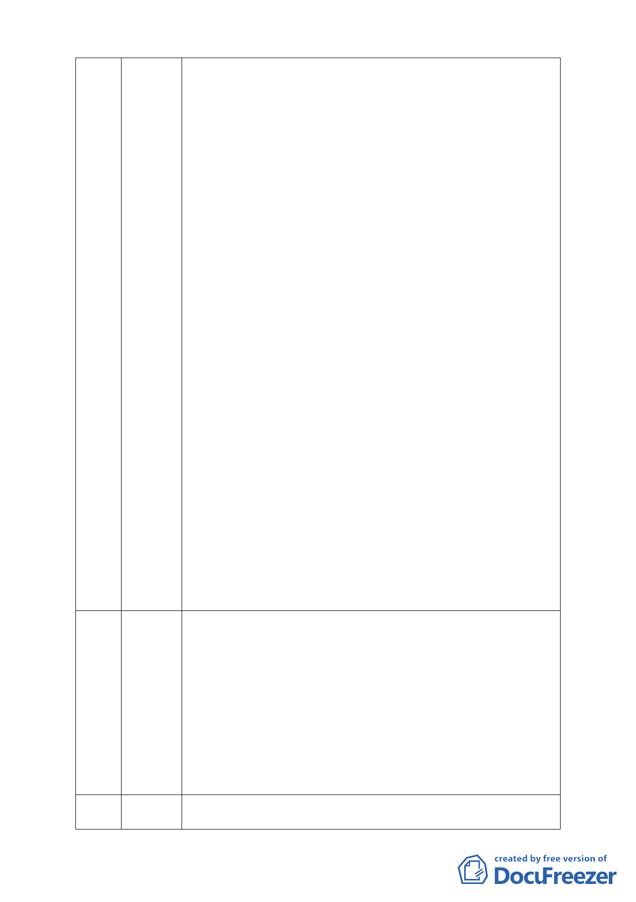

2. 愛護慈濟，就要讓慈濟變成保護區的守護神，模範生而非終結
者，讓慈濟這個由台灣本土創辦的世界級品牌，能推廣其精神及福田志業至全世
間。
3. 慈濟聞聲救苦的志業令人敬佩，但開發興建大樓水泥叢林，大
自然保護區就滅絕回不來了，本變更案如獲通過，各宗教團體群起
效尤，則全台好山好水福地將被開發興辦慈善志業美名假象破壞殆
盡。
4. 慈濟的善行志業，當然不應建立在當年被奸商刁民違法填土的
美麗大湖保護區溜地目的爛泥上；慈濟是好人，一定做好事，更應
該做對的事。
5. 十幾年前以十數億元去接手購置這塊必然會有爭議的保護區，
應該將功補罪，推動清除廢土深挖大湖重建安全水土保育大湖的志
業，為台北市復建一個絕無僅有的肺葉。
( 二 )如果台北市政府通過本開發案，將面臨居民激烈抗爭的風險。
l. 大湖公園臨近建案，建商皆以保護區景觀為賣點，並舉證保護區
之法規事實；人民信賴政府法令之保護，如果台北市政府違反「信
賴保護」原則，居民將發動申請國賠，以補償高價購屋款之損失。
2. 首善之都的台北市政府通過本案的惡例，將影響全國營建業之
經營，因建案地理環境之介紹，將無法確認，衝擊經濟發展、公平
交易及消費保護法規。
3. 慈濟開發當局枉顧都委會十餘年來歷次審議委員的專業修正意
見，現今計畫違法違規變本加厲，借名社福使用，閃躲環評、不辦
公聽，僅賴私通，誠信蕩然，蠻橫開發，我執固執，台北市府怎可
逢迎慈善霸權，蓄意護航。
4. 北市府都發局等相關單位如果怠忽職責，明知申辦開發單位避
法取巧，未依法把關，權益受害居民必將尋求司法院及監察院的途
徑爭取公益。
5. 台北市政府應有積極施政作為，編列預算以公告地價收購慈濟
內湖園區，並開挖及疏濬大湖舊貌，維護山光水色並使居民兔於淹
水惡夢的水土保育大湖。
( 三 ).花蓮有慈濟，台北有大湖，這是台灣全民的珍貴資產，請大
家誓死珍愛疼惜 。
74
廖信東
1、主要訴求為優先重劃此區與慈濟共同開發，減少大湖公園淤積，
建立上下游排水系統，請慈濟退回本案。
2、本案違反水土保持法，滯洪量應採 50 年計算，上游淹水主要是
上下游落差太大，達 25 比 1；原有山陵線不變，所提出集水區面
積也有誤。
3、ㄧ年之間同時有三個颱風，建議市府於降雨強度部分應重新檢
討。
4、之所以反對此案係因為基地就在集水區下游，未來不可能把房
子拆掉再重蓋，基礎不對上游再怎麼做都不對，此區河谷地形大雨
ㄧ來就淹水了。
5、如有需要建議慈濟要蓋地下三層樓做滯洪池。
個人很不解為何保護區可以調合經濟的說法予以變更挖掉，我也不
75 唐國陽 知道如何跟家中小孩說慈濟要在此蓋房子。我們在此擋主要是保護
- 10 -